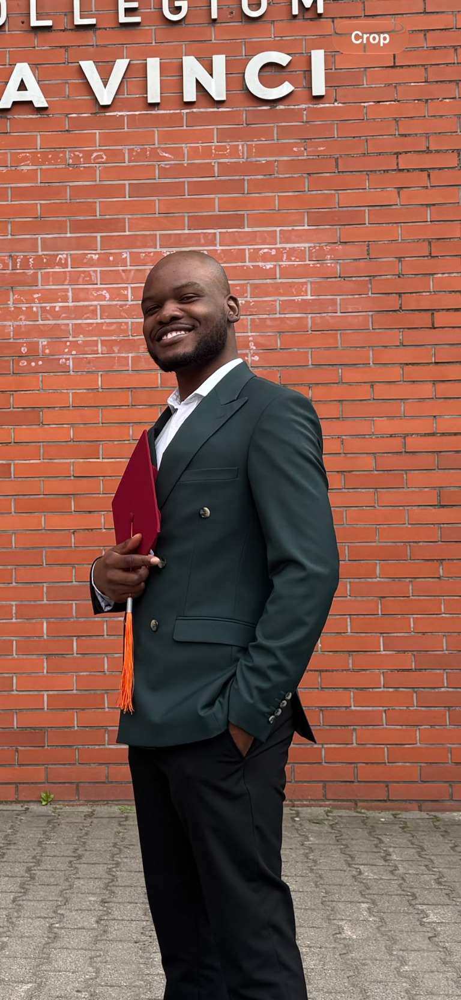
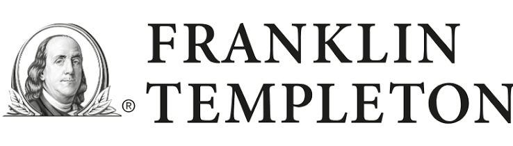
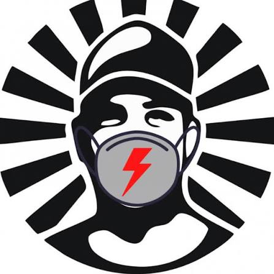
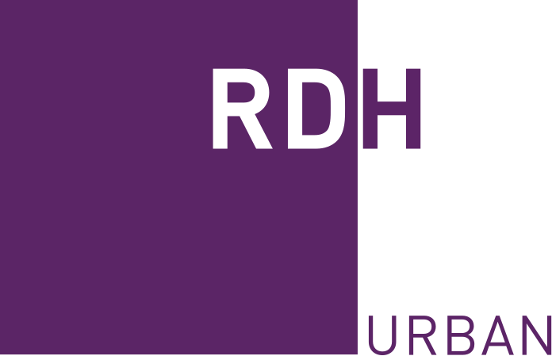

COMPLETED · 2026
Bachelor of Engineering
in Information Technology
Collegium Da Vinci
Poznań, Poland
Leader, Strategist, Project Management
AN ENGINEERING MIND. A MANAGEMENT LENS.
I’m Herbert. I connect an IT engineering background with a growing understanding of people, projects, and how work gets done.
Currently studying Project Management at WSB Merito

PLACES THAT HAVE
SHAPED MY PERSPECTIVE

INTERNSHIP
TACO
RESEARCH COLLABORATION PRESENTATION VENUE01 / EXPERIENCE
Different settings. A connected perspective.From financial research to a busy restaurant floor, I’m interested in what makes work clearer, more coordinated, and more useful.
Reviewed ESG information across MSCI, Sustainalytics, and internal sources, identifying gaps and discrepancies and organising findings for follow-up.
WHAT I TAKE FORWARDGood decisions depend on information people can trust.
Coordinating customer requests with the restaurant team and delivery partners. Prioritising competing needs and recognising recurring service issues in a fast-moving environment.
WHAT I TAKE FORWARDA strong culture enables effective processes.
Contributed to an eco-friendly bridge proof of concept through a joint project involving RDH Urban Atelier, HAS Green Academy, and Collegium Da Vinci. Helped translate technical and environmental information into presentations and recommendations for Poznań City Hall.
WHAT I TAKE FORWARDCross-disciplinary collaboration brings fresh perspectives and deeper insight.
Delivered the closing summary of the environmental project at beyond.pl, presenting the work to an audience including shareholders and senior stakeholders.
WHAT I TAKE FORWARDComplex work becomes more valuable when you can explain why it matters.
02 / CREDENTIALS
Collegium Da Vinci
Poznań, Poland
WSB Merito
Poznań, Poland
RDH Urban · HAS Green Academy
Collegium Da Vinci